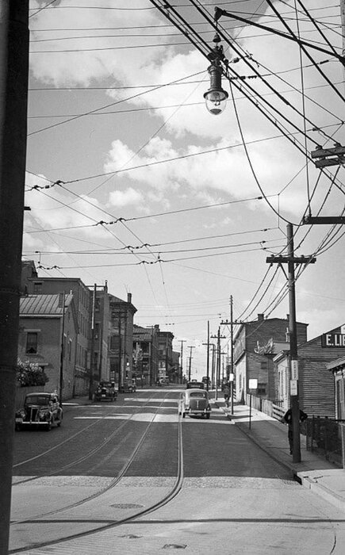

Barry Clark
Unknown – died before 2006
Clark line · Cincinnati, Ohio
Also known as:
Profile status: FAMILY ACCOUNT
Quick Facts
Born
Unknown UNPROVED
Died
Before 7 June 2006 (before his mother Judy) FAMILY ACCOUNT
Immediate Family
Spouse
Not in notes read UNPROVEDChildren
Not in notes read UNPROVED
Siblings
Barry is Judy's son with Larry Clark; the other four are Homer Jr. × Judy children.
On Family Tree Sites
Couple Folder
Life Timeline
2006 · age -
Died before his mother Judy (d. 7 June 2006), Unknown FAMILY ACCOUNT
Life Story
Barry Clark is the son of Judith Mae Palmer and Larry Clark {FAM}.
He died before Judy did {FAM}. No birth date, place, or burial detail was in the notes read for this draft.
Sources and Evidence
- Homer William Brewster Jr. × Judith Mae Palmer couple profile Doc — Children list and Memories & Life FAMILY ACCOUNT
- Geni profile, read via Rick's logged-in Geni tree 2026-11-02 — parents/spouse verified from parent children links SUPPORTED
- Geni, read-only 2026-11-02: Barry Clark, 6000000228324262992 — son of Larry Clark × Judy SUPPORTED; birth placeholder estimate and no death date, both not used as facts here
Grades: DOCUMENTED an original record says it · SUPPORTED several records point to it · FAMILY ACCOUNT the family's own telling · UNPROVED a lead, not proved.
Research Notes and Open Questions
- Health detail that appears in the parents' profile as unconfirmed family memory is DELIBERATELY LEFT OUT — do not add without a record and the owner's approval.
- No photo of Barry was identified in the Pictures listing read.
- PUBLIC-PAGE STYLE DRAFT ONLY — do NOT publish until the owner confirms the gated setup.
- Geni verified 2026-11-02, read-only: Barry Clark, 6000000228324262992, son of Larry Clark × Judy, half-brother of the other four. Geni birth is a placeholder estimate only (1944–2004) — NOT used as a birth date in this draft. Geni shows no death date, so 'died before Judy' remains family account only.
- No photo on this page: street and place photos were removed 2026-11-02 — no photo of this person will be used until a real photo of them is found in their parents' or siblings' folders.
DNA
No DNA matches linked yet.